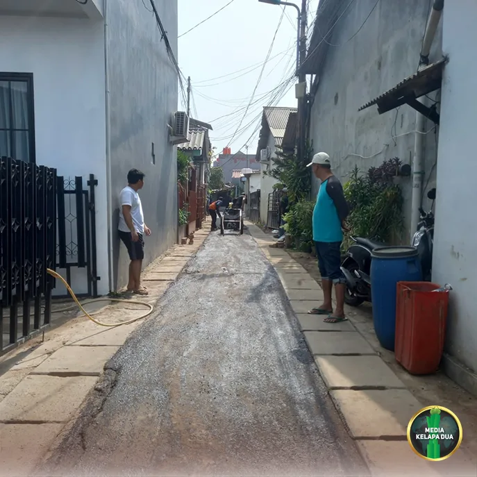

MediaKada | Pekerjaan pemasangan jaringan pipa Hidran Mandiri yang mencakup wilayah RT 002, RT 004, dan RT 005 di RW 08, serta RT 006 dan RT 007 di RW 03 Kelurahan Kelapa Dua, Kecamatan Kebon Jeruk, telah selesai dilaksanakan. Memasuki tahap akhir, dilakukan proses pemadatan tanah bekas galian secara bertahap guna memastikan kondisi badan jalan tetap stabil dan tidak mengalami penurunan atau amblas.
Sebagai tahap penyelesaian, dilakukan pekerjaan pengaspalan (hotmix) untuk mengembalikan kondisi jalan seperti semula setelah pemasangan jaringan pipa Hidran Mandiri selesai dikerjakan. Kegiatan pengaspalan dilaksanakan pada 23 dan 25 Oktober 2026, diawali di wilayah RW 03 yang meliputi RT 006 dan RT 007, kemudian dilanjutkan di sepanjang Jalan Kayu Manis Utama, Gang menuju Musholla Al Hidayah, Jalan Kayu Manis IV, hingga Gang Lada. Pekerjaan ini merupakan bagian dari komitmen pelaksana proyek untuk memulihkan kondisi jalan dan lingkungan warga sesuai kondisi semula.
Pekerjaan pengaspalan tersebut dilaksanakan oleh PT Hanania Arihta Persada selaku rekanan Suku Dinas Penanggulangan Kebakaran dan Penyelamatan (Gulkarmat) Kota Administrasi Jakarta Barat. Kegiatan ini merupakan bagian dari komitmen pelaksana proyek untuk mengembalikan kondisi lingkungan dan akses jalan warga setelah proses pemasangan jaringan pipa Hidran Mandiri selesai dilakukan
Pengurus RW dan warga RW 08 Kelurahan Kelapa Dua, khususnya yang berada di jalur pemasangan jaringan pipa, menyampaikan apresiasi atas pembangunan Hidran Mandiri tersebut. Selain berfungsi memperkuat sistem proteksi kebakaran lingkungan dan meningkatkan kesiapsiagaan warga dalam menghadapi potensi kebakaran, pelaksanaan pengaspalan jalan juga memberikan manfaat tambahan berupa perbaikan kondisi jalan yang sebelumnya mengalami kerusakan sehingga kini menjadi lebih rapi, nyaman, dan aman untuk digunakan masyarakat.
Dengan selesainya pekerjaan ini, diharapkan keberadaan Hidran Mandiri dapat menjadi sarana pendukung penting dalam upaya mitigasi kebakaran sekaligus meningkatkan kualitas infrastruktur lingkungan bagi warga Kelurahan Kelapa Dua.